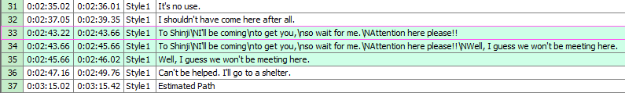
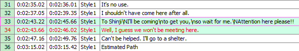

Aegisub / Editing Subtitles
Editing subtitles is what Aegisub is made for. This page will deal with basic text editing of subtitle lines; for more information on the typography of subtitles, see typesetting. For information on the timing of subtitle lines, see working with audio.
Opening subtitles
In the File menu, there are four menu choices that relate to opening or creating subtitles:
- New subtitles - Creates a new, blank script.
- Open subtitles - Opens an existing subtitles file or imports subtitles from a Matroska container file.
- Open subtitles with charset - Opens subtitles but lets you choose what character set Aegisub will use to interpret the file. Usually not needed, but if you have a file in an unusual charset Aegisub will occasionally misdetect it.
- Open subtitles from video - Open the subtitles muxed into the currently open video file.
When you open a subtitles file that is not detected as Unicode, Aegisub will attempt to guess what character set it is encoded with. If it is unsure, it will ask you to choose from two or more likely alternatives. If the result looks garbled or otherwise incorrect, try reopening it with another character set.
Supported formats
Aegisub supports reading the following subtitle formats:
- Advanced Substation Alpha, also known as SSA v4+ (.ass)
- Substation Alpha v4 (.ssa)
- SubRip Text (.srt)
- MPEG4 Timed Text (limited support at best; broken at worst), also known as ISO/IEC 14496-17, MPEG-4 Part 17 or just TTXT (.ttxt)
- MicroDVD (.sub)
- Plain "dialog script" formatted text (see below)
Importing subtitles from MKV
Loading subtitles directly from Matroska files can also be done. The following CodecIDs are supported:
- S_TEXT/UTF8 (SRT)
- S_TEXT/ASS (ASS/SSA v4+)
- S_TEXT/SSA (SSA v4)
Importing plain text scripts
Aegisub also supports importing "dialogue-formatted" plain text scripts. For example:
Actor 1: Well do I understand your speech, yet few strangers do so.
Why then do you not speak in the Common Tongue,
as is the custom in the West, if you wish to be answered?
# TL check: The above seems to be a quote from the lord of the rings, look it up later
Actor 2: What are you babbling about?
This will result in five subtitle lines, one being commented out. The first three will have the actor field set to "Actor 1", and the fifth will have it set to "Actor 2" (the comment line's actor field will be blank).
When you open a file with the extension .txt, Aegisub will ask you about what
characters it should use as the actor separator and comment starter,
respectively. In the example above, the actor separator is a colon
(":") and the comment starter is a hash ("#").
Editing subtitles
Editing subtitles in Aegisub is done in two areas: the subtitle edit box (where you type in or edit text) and the subtitles grid. Changes made in both the edit box and the grid normally modify all selected lines, and not just the line displayed in the edit box.
The subtitles edit box
The edit box is just a plain editing area with a number of associated controls. They are:
- Flags the line as a comment. Comment lines will not be displayed on the video.
- The style used for this line.
- The actor speaking this line. Has no actual effect on subtitle display but can be useful for editing purposes.
- Effect for this line. There are a few predefined effects which can be applied via this field, but renderer support for them is spotty and using override tags is nearly always a better idea. This is commonly uses as a metadata field for automation scripts.
- Layer for this line. If you override positioning with an override tag so that two or more lines are displayed on top of each other, this field controls which one is drawn where; higher layer numbers are drawn on top of lower ones.
- Start time for the line.
- End time for the line.
- Duration for the line. If you modify this field, the end time will be modified as a result.
- Left margin for this line. 0 means use the margin specified in the style.
- Right margin for this line. 0 means use the margin specified in the style.
- Vertical margin for this line. 0 means use the margin specified in the style.
- Inserts a bold override tag (
\b1) at the cursor position. If the text is already bold, inserts a corresponding closing tag (\b0). - Inserts an italics override tag (
\i1) at the cursor position. If the text is already italic, inserts a corresponding closing tag (\i0). - Inserts an underline override tag (
\u1) at the cursor position. If the text is already italic, inserts a corresponding closing tag (\u0). - Inserts an strikeout override tag (
\s1) at the cursor position. If the text is already italic, inserts a corresponding closing tag (\s0). - Brings up a font selection window and inserts a font face name tag
(
\fnFontName) with the given font name, as well as the chosen effect tags. - Brings up the color picker and lets you choose a
color; then inserts a primary color override tag (
\c) with the chosen color at the cursor position. - Brings up the color picker and lets you choose a
color; then inserts a secondary color override tag (
\2c) with the chosen color at the cursor position. - Brings up the color picker and lets you choose a
color; then inserts an outline color override tag (
\3c) with the chosen color at the cursor position. - Brings up the color picker and lets you choose a
color; then inserts a shadow color override tag (
\4c) with the chosen color at the cursor position. - Move to the next line, creating a new one at the end of the file if needed. Note that unlike in previous versions of Aegisub, changes do not need to be committed using this button.
- Changes display between times and frames. Note that this does not change how times are actually stored in the script.
If you right-click anywhere in the edit box, you get the following menu:
Select all, undo, copy, cut and paste all do what you'd expect them to.
- Spell checker: if you right-click on a word that has been detected as misspelled, the spell checker will suggest some likely alternative. You can also set which language it will use for checking from this menu, or add words that it doesn't recognize but you know to be correctly spelled to the dictionary.
- Thesaurus: suggests alternative ways to write the highlighted word.
- Split line: splits the line into two new lines at the cursor position. Preserve times keeps the old line's timing for both lines, estimate times tries to guess where the split is based on the length of the text on each side of the cursor.
The subtitles grid
The subtitles grid shows all lines (comments and otherwise) in the entire file.
Some common controls:
- To move lines up or down in the grid, select them, hold down the Alt key and press the up- or down-arrow keys.
- To select multiple lines, hold down either Ctrl or Shift and click. Ctrl-click selects one more line per click; Shift-click selects all the lines between the first clicked and the last clicked.
- To sort all lines in the grid, open the Subtitle menu, and under Sort Lines select the field to sort the lines on.
- To change the way override tags are displayed in the grid, click the "cycle through tag hiding modes" button on the toolbar.
The lines have different (configurable) colors representing different things; see the subtitles grid section of the options page for details on what the colors mean.
By default, the following columns are visible:
- #
- The line number.
- Start
- The start time of the line.
- End
- The end time of the line.
- Style
- The style used for this line.
- Text
- The text of the line (this is what will be displayed on the video).
The following columns will be displayed if any line in the script uses them:
- L
- The layer of the line (see above).
- Actor
- The actor speaking the line.
- Effect
- The effect for this line.
- Left
- The left margin.
- Right
- The right margin.
- Vert
- The vertical margin.
You can also right-click the top line of the grid (the one with the column names) to manually select which columns you want to be visible.
Right-clicking any other line in the grid gives you the following menu (many of the options are also available in other menus):
- Insert (before/after)
- Inserts a new empty line before or after the selected line. The new line will be timed start at 0:00:00.00 and go to 0:00:05.00.
- Insert at video time (before/after)
- Same as the above, but the new line will be timed to start at the current video frame. Not enabled unless you have video loaded.
- Duplicate
- Duplicates the selected line(s).
- Duplicate and shift by 1 frame
- Duplicates the selected line(s) and shifts the start and end times one frame forward. Useful for frame-by-frame typesetting. Only enabled if you have video or timecodes loaded.
- Split (by karaoke)
- Splits the line into one new line per syllable, as delimited by karaoke
override tags (
\kand its relatives). The timing of the first line will start at the original line's start time and end at that time plus the length of the first syllable; the following lines will start at the end of the previous and last for the duration of the syllable. - Swap
- Swaps the places (in the grid) of two selected lines.
- Join (keep first)
- Joins two or more lines, discarding the text of all but the first. The new line will be timed to start at the first line's start time and end at the last line's end time. Only enabled if you have more than one line selected.
- Join (concatenate)
- Same as above, but concatenates the text of all selected lines instead. A
newline override (
\N) is inserted between the texts of each source line. - Join (as karaoke)
- Does the inverse of Split (by karaoke), i.e. the same as Join
(concatenate) but inserts
\ktags with the timing of each source line in the joined line. - Make times continuous (change start/change end)
- Modifies the timing of the selected lines so that the end time of each line is the same as the start time of the next line. Change start/change end determines whether the function changes the end time or the start time of each line. Only enabled when you have more than one line selected.
- Recombine lines
-
Given two or more lines with the same text being partially present in all of them, creates one line per text fragment instead. This is mostly useful for correcting subs ripped from DVDs, which frequently look something like this:

After recombine lines, the result is:

- Create audio clip
- Saves a segment of the loaded audio corresponding to the timing of the selected lines (starting at the earliest start time and ending at the latest end time) as an uncompressed WAV file. Only enabled if you have audio loaded.
- Cut/Copy/Paste
- Cuts/copies/pastes entire lines. Note that the lines are copied as plain text and can be copied and pasted freely between text editors, chat programs, web browsers, other instances of Aegisub etc.
- Paste Lines Over...
- Open the Paste Over dialog.
- Delete
- Deletes the selected lines.